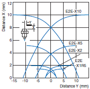
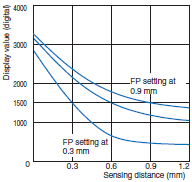
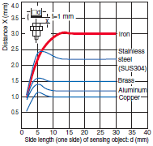

Building Automation
Industrial Automation
Power Automation & Safety


Bangladesh Distributor
Proximity Sensors
Proximity Sensors are available in models using high-frequency oscillation to detect ferrous and non-ferrous metal objects and in capacitive models to detect non-metal objects. Models are available with environment resistance, heat resistance, resistance to chemicals, and resistance to water.
|
|
|
|
|
|
|
|
Further Information |
|
|
Troubleshooting |
Related Contents
- Proximity Sensors
Interpreting Engineering Data
| Sensing Area Refer to Explanation of Terms | Sensing Distance vs. Display Values | Influence of Sensing Object Size and Material Refer to the Precautions for Correct Use in the Safety Precautions for All Proximity Sensors. |
| E2E-X[][]E[]/-X[]Y[]/-X[]F1 | E2C-EDR6-F | E2E-X3D[]/-X3T1 |
 |  |  |
| ・ This graph shows engineering data from moving the sensing object parallel to the sensing surface of the Proximity Sensor. ・ Refer to this graph for Proximity Sensor applications, such as positioning. When a high degree of precision is required, use a Separate Amplifier Proximity Sensor. | ・ This type of graph is used with Separate Amplifier Proximity Sensors. It shows the values when executing FP (Fine Positioning) at specified distances. FP settings are possible at any desired distance, with a digital value of 1,500 as a reference for the E2C-EDA. ・ The above graph shows numerical examples when Fine Positioning is executed at the three points of 0.3, 0.6, and 0.9 mm. | ・ Here, the horizontal axis indicates the size of the sensing object, and the vertical axis indicates the Sensing Distance. It shows changes in the Sensing Distance due to the size and material of the sensing object. Refer to this data when using the same Sensor to detect various different sensing objects, or when confirming the allowable leeway for detection. |
| Leakage Current Characteristics Refer to the Precautions for Correct Use in the Safety Precautions for All Proximity Sensors. | Residual Voltage Characteristics Refer to the Precautions for Correct Use in the Safety Precautions for All Proximity Sensors. |
| ・ In contrast with contact-type limit switches, which have physical contacts, leakage current in a 2-wire Proximity Sensor is related to an electrical switch that consists of transistors and other components. This graph indicates the leakage current characteristics caused by transistors in the output section of the Sensor. ・ Generally speaking, the higher the voltage, the larger the leakage current. Because leakage current flows to the load connected to the Proximity Sensor, care must be taken to select a load that will not cause the Sensor to operate from the leakage current. ・ Be careful of this factor when replacing a limit switch, micro-switch, or other switch with a Proximity Sensor. | ・ Similar to leakage current characteristics, residual voltage is something that occurs due to electrical switches that are comprised of transistors and other components. For example, whereas the voltage in a normally open switch should be 0 V in the ON state, and the same as the power supply voltage in the OFF state, residual voltage refers to a certain level of voltage remaining in the switch. Be careful of this factor when replacing a limit switch, micro-switch, or other switch with a Proximity Sensor. |